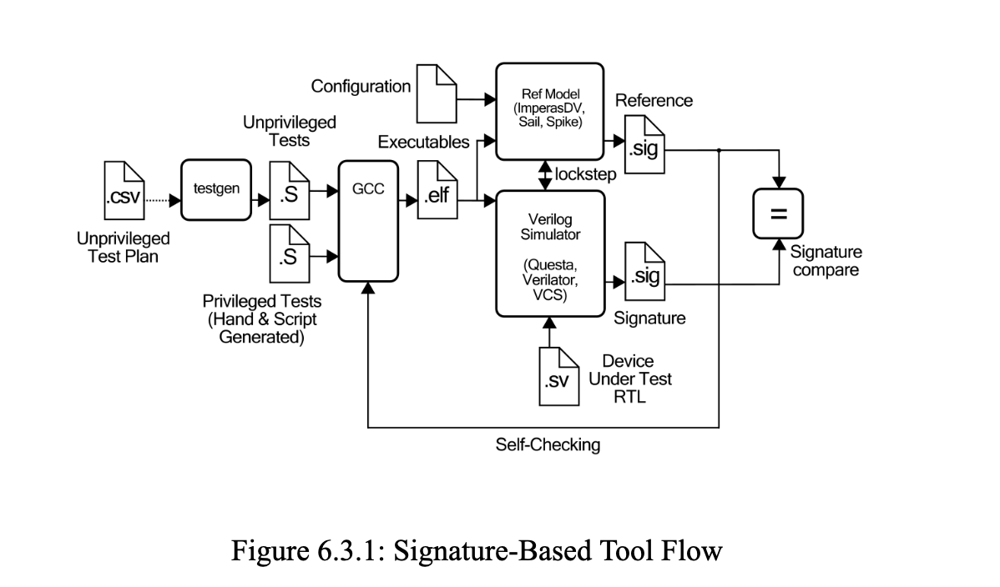

Duration: February 2024 - Ongoing
Clay-Wolkin Fellowship Webpage
As part of the Clay-Wolkin Fellowship at Harvey Mudd College (led by Professor David Harris), I am developing a comprehensive open-source RISC-V architectural functional verification suite that will become the official version 4.0 of the RISC-V Architectural Verification Test Suite for RISC-V International. This work originally began as an effort to fully verify the CORE-V Wally processor — an open-source RISC-V RV64GC/RV32GC core built by the Clay-Wolkin Fellowship — to advance it to Technology Readiness Level 5. Due to its robust and comprehensive testing, the suite has now been approved as the official version 4.0 of the RISC-V Architectural Verification Test Suite. My responsibilities include developing complete test suites — including test plans, coverpoints, and tests — that ensure conformance to the RISC-V ISA, integrating them into the Architectural Compatibility Test (ACT) framework, and developing signature checking and self-checking mechanisms. Successful completion and passing of the ACT suite is a foundational step toward gaining permission to use the “RISC-V Compatible” trademark for processor profiles and extensions.  HMC CLINIC (10XENGINEERS):
Most students in the clinic were also part of the Clay-Wolkin fellowship and have continue working on the development of the tests and the integration into ACT as summer research.
Final Clinic Presentation:
Final Report for Clinic: